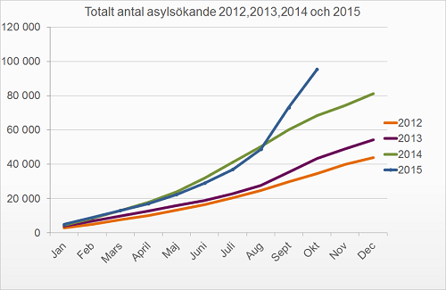

< < < Back
New Forecast Says 160,000 Immigrants Will Seek Asylum In Sweden This Year – Return Of Kings
With every day that goes by, thousands of immigrants from Africa and the Middle East pour into Europe. So far, there seems to be no end in sight to this record-breaking refugee crisis. And the crisis is hitting Sweden hard.
According to a new prognosis by the Swedish Migration Agency, 160,000 immigrants will seek asylum here in 2015, more than double the amount that was estimated a few months ago. The lowest estimate is 140,000, while the highest is 190,000. 29,000 to 40,000 of the asylum seekers are “unaccompanied children.”
To give some context to these numbers, Sweden has around 9.8 million inhabitants. The total number of asylum seekers yearly is steadily increasing, from 43,887 in 2012, to 54,259 in 2013 and 81,301 last year.

Total number of asylum seekers, from 2012 to October 2015. Chart made by the Migration Agency.
So far this year, about 100,000 persons have come to Sweden to seek asylum, more than ever before. This number surpasses the forecast made in July, which predicted that “only” 74,000 would come during the whole year. This is due to the vast increase of immigrants entering the country since the end of summer. During October, the Migration Agency has registered over 9,000 asylum applicants per week.

Magdalena Andersson, Minister of Finance.
Staggering costs
More immigrants means the Migration Agency will need more money. Comparing with the July prognosis, the funds needed for next year has nearly doubled, from 31 to 60,2 billion SEK. For 2017, immigration will cost the treasury 73 billion SEK.
The new prognosis forces the left-wing government to prioritize. Some of its goals will likely not be achieved—like Sweden having the lowest unemployment rate in the EU by 2020.
“This growth in costs is not sustainable,” said the Minister of Finance at a press conference this Thursday. The government will plug the holes in the budget by cutting expenses in other programs, taking loans and increasing the national debt, and using funds that would otherwise go to foreign aid.
Immigrant homes burning
While the immigrants keep coming, their living facilities are under attack. Several homes for asylum seekers have been damaged and set ablaze this year.
It’s difficult to get a good overview of how many fires there has been. One news outlet counts to fifteen different incidents connected to these facilities between March and October. But new fires seem to be erupting every day.
On Thursday, another building that was supposed to become a home for refugees was torched. The police found that someone had broken a window and poured gasoline into the cellar. This incident and several other fires are being handled as arson cases, perhaps set by some of the more militant individuals who do not wish to see others enter their country to leech off of the government.
“This is not the Sweden we know. Not the Sweden I’m proud of,” says Prime Minister Stefan Löfven.
Building tents
The Migration Agency is having trouble finding housing for the immigrants. The situation is getting desperate. By the end of the year, between 25,000 and 45,000 accommodations will be missing.
Immigrants have already been placed in churches, warehouses, and gym halls. Now the agency is forced to set up camps with tents for the asylum seekers to live in, while also considering turning some of the 65,000 bomb shelters in Sweden into living quarters.
Next fall, tents will be ready for 30,000 immigrants or more.
“If this development continues month after month then we will reach a point when we cannot longer manage it,” says the Minister of Justice and Migration.
Unsustainable development
Time for Prime Minister Stefan Löfven to face the crisis.
The minister said it best: this development can’t be sustained in the long run. If this trend doesn’t turn around soon, the system will collapse at some point.
It could happen sooner than one might think. If the latest prognosis showed double the number of immigrants as the previous one, who can say that the next forecast won’t double the number again?
The left-wing government seems to be waking up now to the fact that money doesn’t grow on trees, and houses don’t build themselves. Immigration costs, and a lot of immigration costs a lot.
It’s actually pretty simple, and everybody can understand it regardless of political preferences. But leftists have been able to fool themselves for a very long time. Now the results are in, and the politicians are getting desperate.
No easy way out
But there are no easy solutions to this issue, at least none that can be considered realistic. Getting into this mess was easy, but getting out will prove much harder. Populists on the left want the borders to be completely open and all immigrants to get help, while the far right wants borders to be shut entirely. The first option is obviously not financially viable, while most Swedes still see the second alternative as morally repugnant.
Reality is hitting the government hard now, and the situation is spiraling out of control. We can only imagine what this may lead to.
Read More: Why Does Sweden Take In More Immigrants Than Other Nordic Countries?